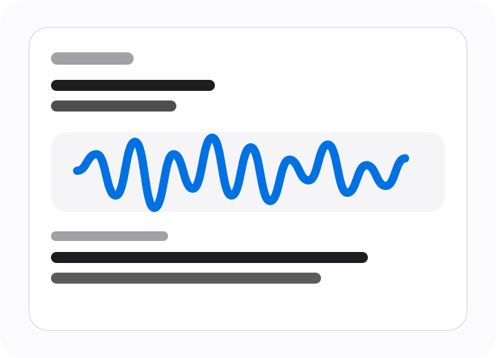
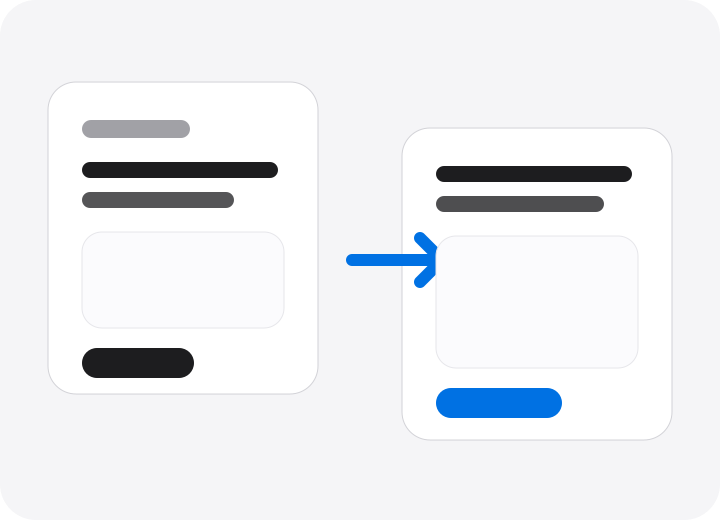
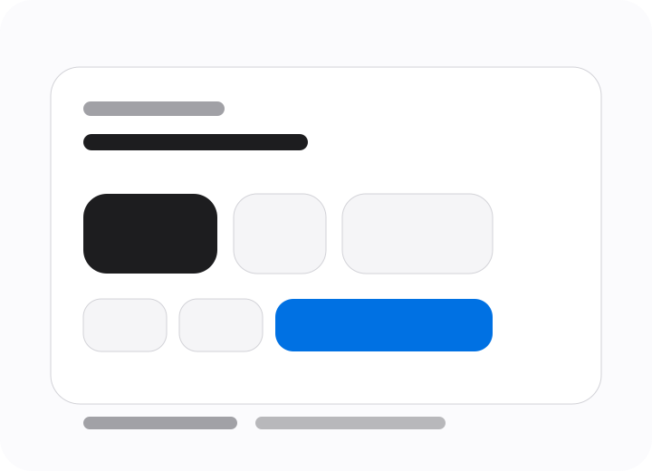

Live capture
See speech appear as usable text.
Follow the interim transcript, then keep only the final text you want.
Voice input
EchoType turns speech into text in real time. Open the microphone, talk naturally, and paste the result wherever you normally type.

Live capture
Follow the interim transcript, then keep only the final text you want.

Auto insert
Keep a second field ready so the result is already where you need it next.

Quick control
Start, stop, and copy without hunting around the screen for buttons.
Live prototype
This browser version uses in-browser speech recognition when supported. For best results, allow microphone access and use a Chromium-based browser.
Transcript
Live preview
Waiting for speech...
Target field
What it does
Open the microphone, speak naturally, and get editable text immediately.
Why it matters
Useful for notes, chat, email, prompts, and any moment when typing feels slow.
Current scope
This version is intentionally minimal: speech in, text out, copy or insert.
Designed to stay out of the way
The layout is intentionally quiet. Open the mic, watch the transcript, copy the result, and move on. Nothing extra competes with the one job the app should do well.